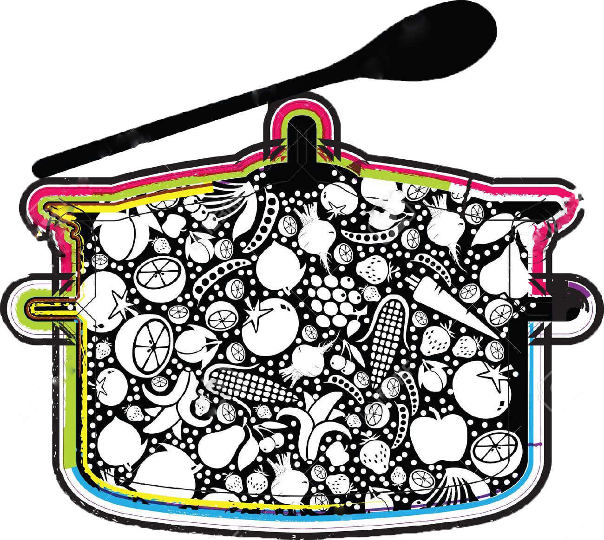

- Authentic Chinese medicinal food dishes are prepared according to traditional recipes and techniques, based on ancient ideas about how the human body operates. They described the effect of each kind of meat, grain, herb, or vegetable on the human body, how the body operates, and gave suggestions about what to prepare to stay healthy or cure disease.
- The earliest work on these various topics dates from the early Han Dynasty era (206 BC-220 AD) and is called the Huangdi Neijing (The Yellow Emperor's Classic of Internal Medicine). It contains the basic ideas of Chinese food therapy. The text gave recommendations on what to eat for different health conditions and different environmental conditions.
- Ancient Chinese medical books list hundreds of plant, animal, and chemical ingredients and tell their specific effects on the human body. These books give ideas about the physical principals involved in human health, and they describe how herbs or special foods help, along with TCM techniques such as moxibustion and acupuncture.